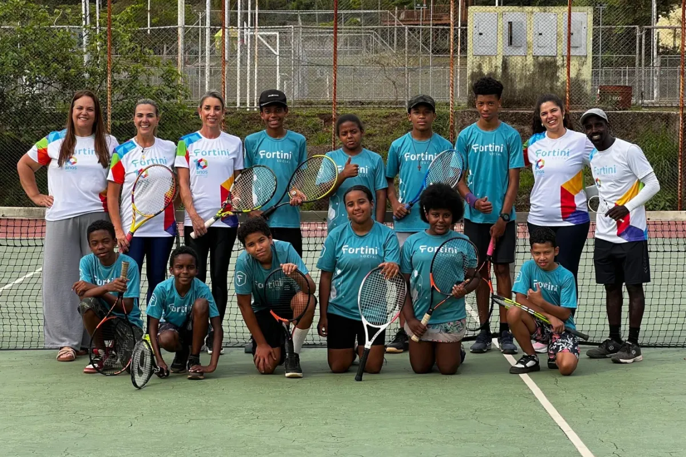

Um convite das Loucas por Tennis




Ajude a transformar vidas
Há 10 anos, a Fortini Social leva educação integral, esporte e cultura a crianças e adolescentes de escolas públicas.
Por que doar para a Fortini Social?
Hoje são mais de mil crianças e adolescentes, em 6 cidades da Grande BH. As oficinas e a equipe são pagas por leis de incentivo e editais, mas esses recursos não podem cobrir as despesas da sede. Sua doação mensal ajuda a pagar essas despesas, como energia, internet e manutenção: a estrutura por trás de todo esse trabalho.
Cartão de crédito · pagamento seguro via Stripe · cancele quando quiser
Quer fazer uma doação única? Clique aqui e escolha o valor
Selo Doar · 1º lugar no Prêmio do Esporte Mineiro 2024 · Finalista do Prêmio Melhores ONGs 2025